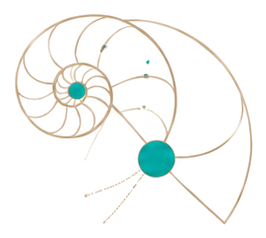
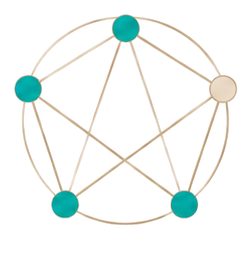
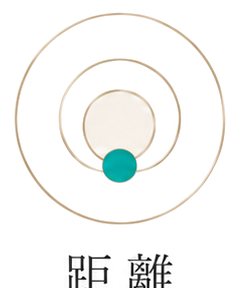
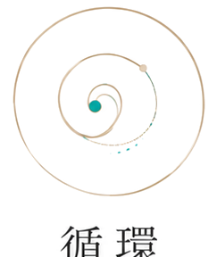

元の6レンズのアイコンモチーフ（視座＝二重円、縁起＝五角形ネットワーク、像＝フラクタル放射、距離＝円と中心点、陰陽＝太極図、循環＝点のある円）に合わせて、スコアを重ねています。赤枠の03 像・05 陰陽・06 循環が最重症、無地の01 視座・02 縁起・04 距離が中程度の固着です。
自称と実測のズレ
黄＝自称（07 アーティスト・02 ケアテイカー）、赤＝実測の固着パターン（06 コミュニケーター・08 アナライザー・11 サポーター）です。自称と実測の間に3タイプ分の乖離があることが、視覚的に見えます。
考える力
L1–L3は稼働 → L4で部分機能 → L5で完全遮断 → L6不可視 → L7は評価対象外
性格を分類するためのスコアではありません。
あなたの現実がどう動いていくか
予測するためのスコアです。